Аньхой. Хойчжоу
Сердце Аньхоя, древний город Хойчжоу
Из 100 с лишним сохранившихся старых городов и деревушек в окрестностях Хуаншань путешественники в первую очередь выбирают осмотреть Хойчжоу (徽州). Как я уже говорила, от него и соседнего Аньцина произошло название провинции Аньхой. И по сей день внутри 500-летних крепостных стен города проживает примерно 10 000 человек. А за их пределами еще 110 000.
Хойчжоу впервые упоминается в III веке до нашей эры, когда эти земли покорил Цинь Шихуан-ди при объединении Китая. Поселение было построено на реке Синьань, связывающей его с более зажиточным востоком. Из-за дефицита пахотных земель местные жители были вынуждены заниматься торговлей, что у них хорошо получалось. Продавали они соль, местный чай, тушь, бумагу и древесину, держали ломбарды, на чем и разбогатели. А заработанные деньги купцы тратили на благо родины: строили храмы, родовые залы, поместья, а для детей возводили академии и приглашали лучших учителей.
С эпохи Тан (618-907) и на протяжении следующей тысячи лет в городе располагалось местное правительство или центр префектуры. Правительство Хойчжоу управляло налогами, образованием и императорскими экзаменами, что делало его центром власти всего региона. А также здесь размещались торговые гильдии, банки.
Исторически Хойчжоу был родиной трех великих конфуцианских философов: Чэн Хао, Чэн И и Чжу Си, за что его прозвали «землей конфуцианства и этикета в Юго-Восточном Китае». Город также почетно называли «Книжной столицей» из-за развитого книгопечатания, производства бумаги, туши и огромного количества образованных людей, ученых и чиновников (сюцаев и цзиньши), вышедших отсюда.
Сейчас Хойчжоу входит в состав четырех наиболее хорошо сохранившихся древних городов Китая. До наших дней дошло 183 исторических зданий и 80 памятников культуры, а вокруг города стоит крепостная стена, построенная в XVI веке.
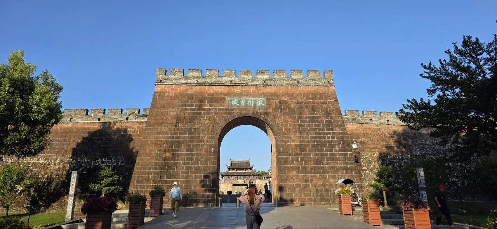
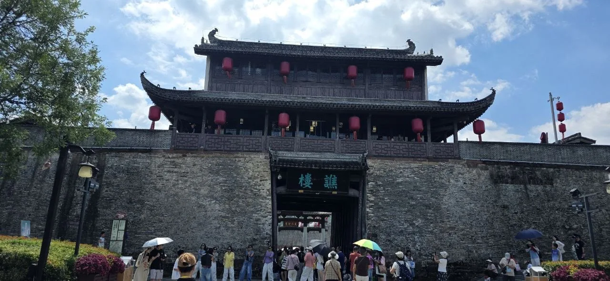
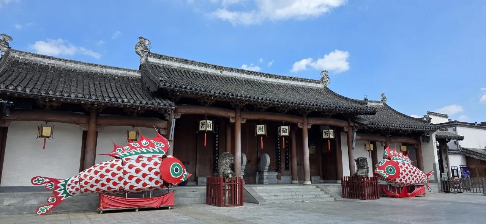
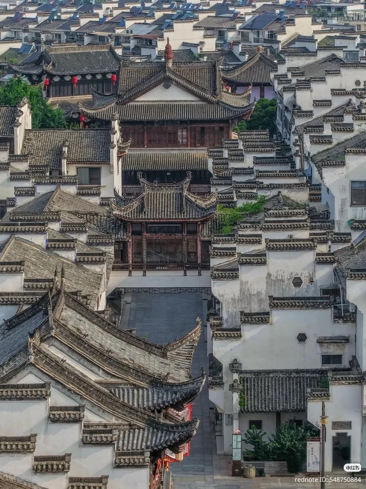
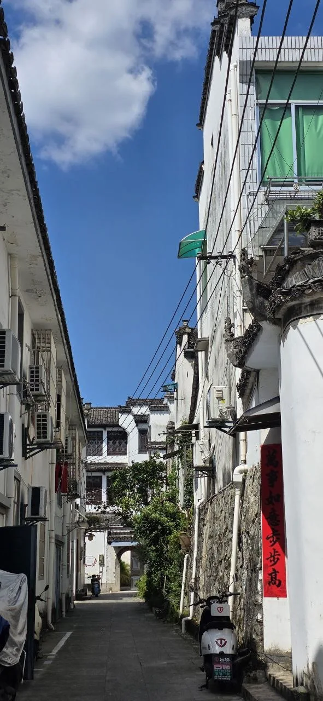
[Фото оригинала — восстановление]
Фотографии в OneNote
К оглавлению
Аньхойская кухня
Как-то раз я писала про Восемь великих кухонь Китая. Так вот, кухня провинции Аньхой входит в их число. Поскольку рельефы здесь гористые, до моря далеко, пастбищ мало, а рек и целебных вершков-корешков много, то и местная кулинария получилась особенной.
Пища у аньхойцев жирная, соленая и иногда острая. В блюдах часто встречаются ферментированные продукты, например, соленая капуста, маринованные овощи, перебродивший рис, тофу, все это из-за стремления продлить время хранения продукта в условиях горной обособленности. Жарят на рапсовом масле, масле из семян камелии, либо на копченом свином сале или ветчине. Все очень ароматно.
Но в то же время горы кормят, и благодаря ним в аньхойской кухне уйма горных деликатесов: разнообразных обычных и древесных грибов, ростков бамбука (竹笋), лекарственных корнеплодов и дичи. Особенно грибов здесь много, они будут в любой лапше, пельменях и даже внутри маленьких жареных пирожков, что продаются на каждом шагу. Чем богаты — тем и рады.
В поездке мы постарались попробовать самые известные блюда, которыми знаменит регион:
Пахучий окунь (臭鳜鱼) — главная звезда Аньхоя. Сначала окуня неделю маринуют в деревянной бочке вместе с солью и сычуаньским перцем. Этот процесс расщепляет белки, в результате чего рыба приобретает характерный запах и плотную текстуру, похожую на зубчик чеснока. Затем рыба промывается, обжаривается на рапсовом масле и тушится вместе с имбирем, чесноком, чили и рисовым вином. Мы не почувствовали никакой специфичный запах, рыба хорошая с очень богатым и насыщенным вкусом.
Волосатый тофу (徽州毛豆腐) — популярная в интернете местная закуска. Как думаете, почему он волосатый? А потому что на тофу культивируют благородную белую плесень. Затем его обжаривают на рапсовом масле до золотистой корочки, тушат с соевым соусом, имбирём и чесноком. Тофу получается очень ароматным и хрустящим, а внутри остается нежным с ярким вкусом умами.
Тушеная в котелке курица (地锅鸡) — кусочки тушеной в сое курицы с сельдереем, морковью, картошкой и овощами. По бокам в котелке наклеены на стену лепешки, которые пекутся вместе с курицей и впитывают в себя ароматные соки.
Линшаньская перебродившая рисовая каша (灵山酒酿) — хоть звучит неаппетитно, но поверьте, это очень вкусный и освежающий местный десерт. Высокогорный клейкий рис пропаривают и заквашивают с винными дрожжами на родниковой воде. В результате рис становится мягким и упругим и выделяется сладкая жидкость с легким привкусом рисового вина. Подают блюдо холодным, добавив сверху ягоды годжи и цветы османтуса. Содержание алкоголя низкое, 0,5-2 градуса.
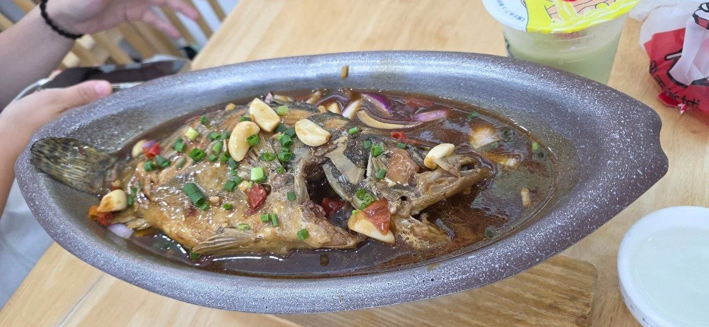
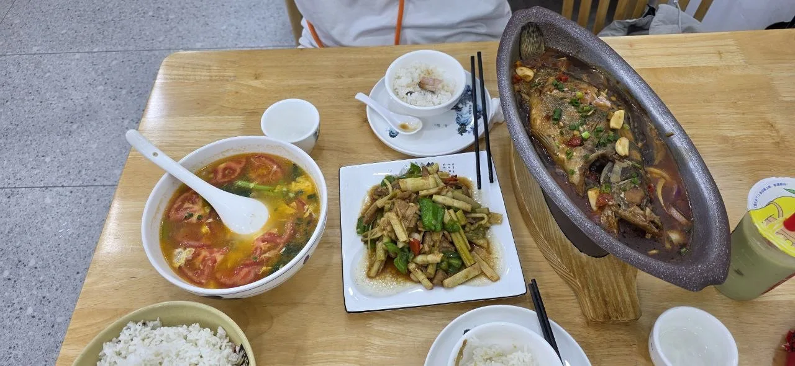
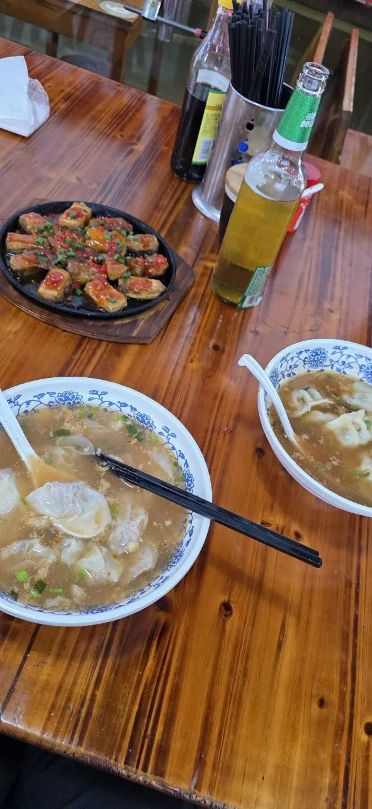
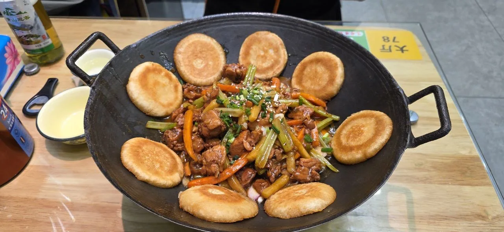
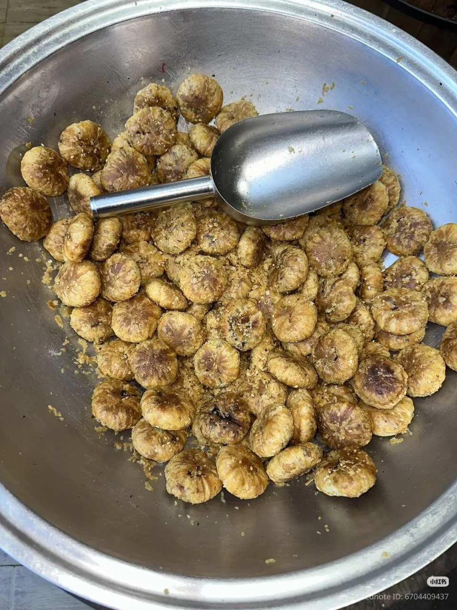
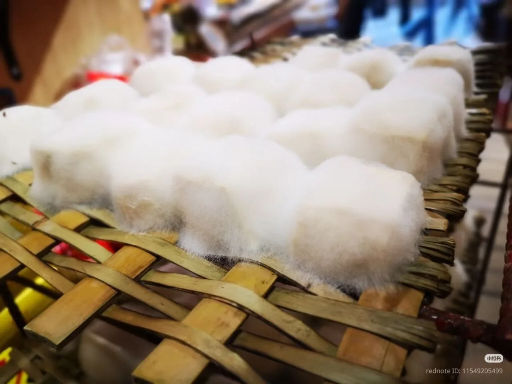
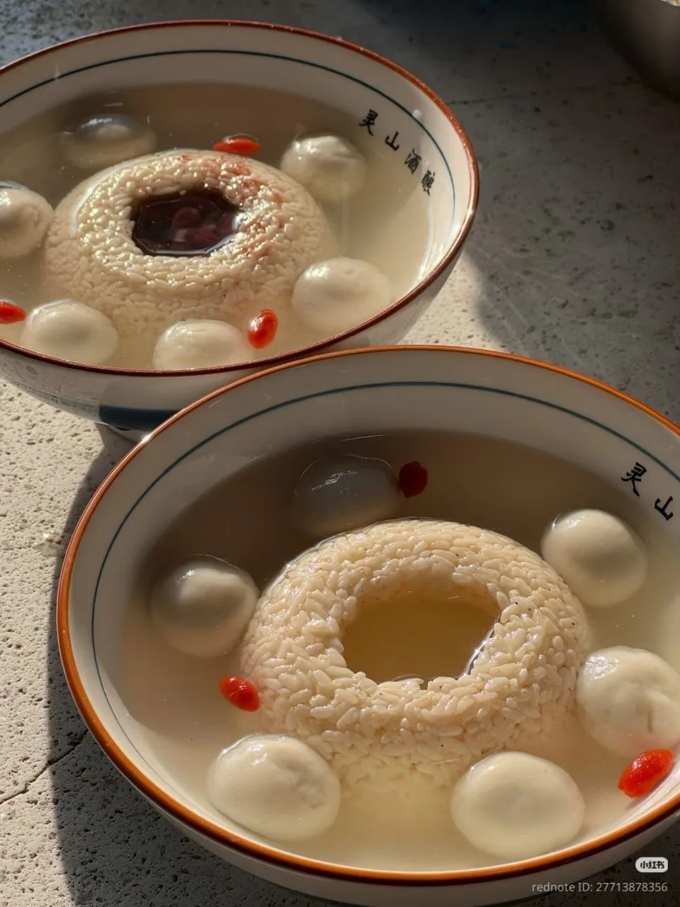
[Фото оригинала — восстановление]
К оглавлению